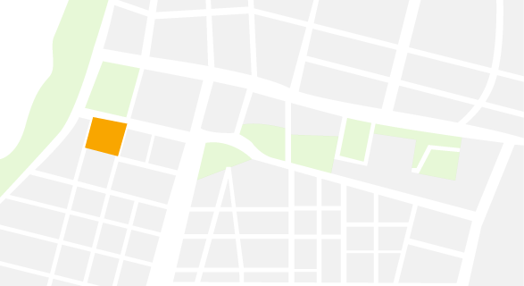
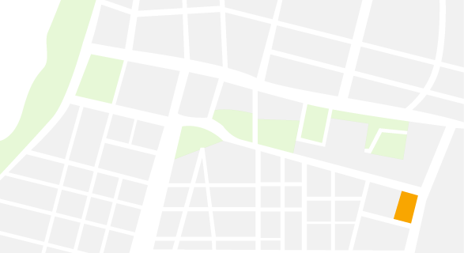
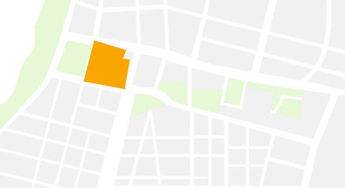
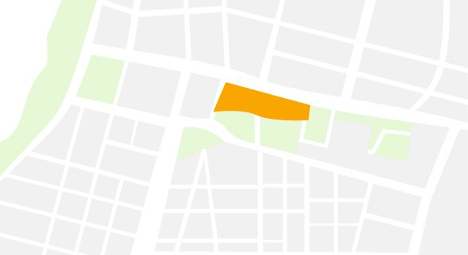
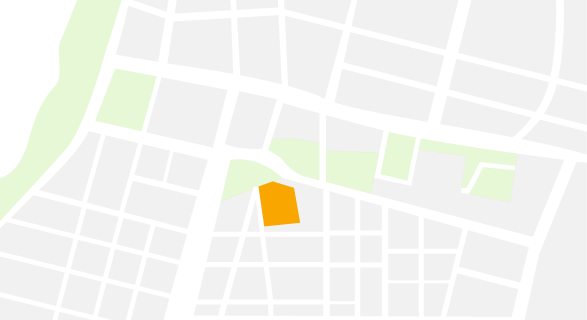
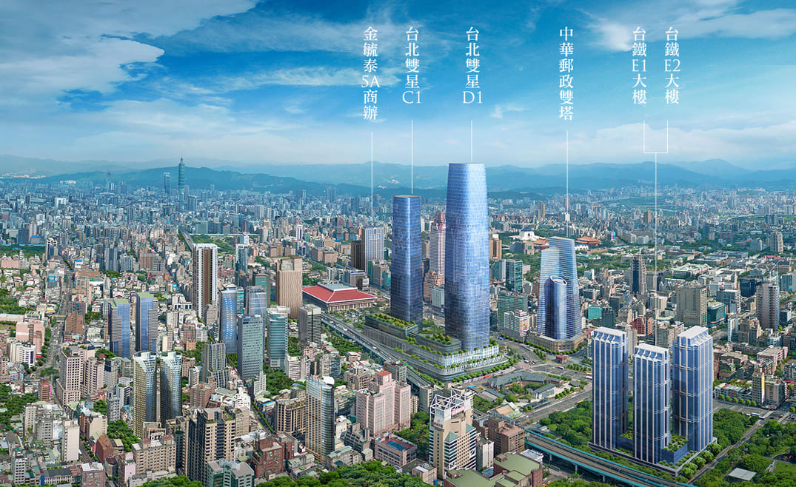

Westside Urban Street Plan
The West Gateway Project, launched in 2014 by former Taipei Mayor Ko Wen-je, follows an eight-year plan to "revitalize the old city and create Taipei's national gateway." It focuses on blending historical and modern architecture, making better use of idle land, and reorganizing traffic and pedestrian routes. The goal is to boost the area's industrial value and support nearby commercial growth.

Xining Public Housing
2025
Completed demolition work.
2026
Redeveloped into social housing.

Former Site of the Taipei City Council
2025
Building...
2025
It will be transformed into an income-generating property, including an office building and the Taipei City Museum.



Tomorrow Taipei Park
2025
Construction is scheduled to begin soon.This area, designated as the Taipei Main Station Special District (E1 and E2), will include residential buildings, commercial office towers, and preserved cultural heritage sites.
2026
Expected to be completed.

Taipei Twin Towers
2025
Taipei Twin Towers is a joint metro development project integrated with the Taoyuan Airport MRT A1 Station. It consists of skyscrapers featuring offices, shopping malls, hotels, and other facilities.
2027
Expected to be completed.



Chunghwa Post Tower
2025
It will be developed into Taiwan's National Tech-Financial Center and the National Postal and Telecommunications Museum.
2028
Expected to be completed.

